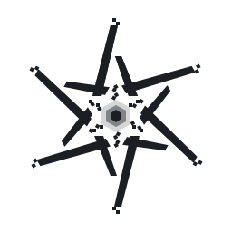
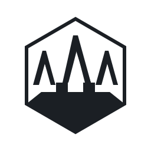
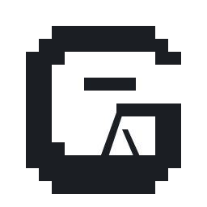
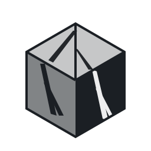
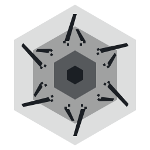

NixOS-style 6-fold rotational hex of lambdas, with stair-step accents at the outer tips and a stepped hex at the core (GNUstep).

A hex badge that draws the architecture: a stepped GNU/LFS base with three Nix lambdas rising out of it.

A blocky pixel-art G (GNUstep) with a lambda tucked into its counter. Reads as the wordmark initial.

Direct GNUstep callback: an iso cube with a lambda etched into each visible face — top, left, and a cut-out on the right.

Top-down view of a hex step pyramid (GNUstep), with six lambdas radiating between the steps (NixOS). Fuses both motifs.
